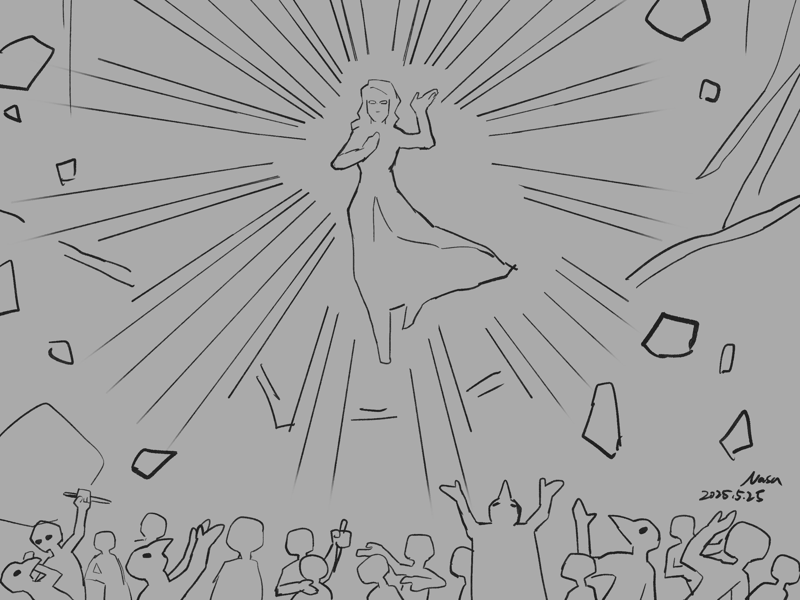

Chapter 4: The Divine Dominion of Everlasting and Love
Requiem of the Feathered Estate

Requiem of the Feathered Estate
15051.09.14
隨著 Lysien Amoret 一手拎著攤軟的 Guns 踏入儀式現場，冒險者們也看見跟在一旁的一名羽僕雙手端著他們從卓茲克莊園取得的「月神王冠」。
冒險者們對 Lysien 的情緒各個不同：Lott 因為 Lysien 能對愛情與他有所共鳴，所以格外同情；Ubbo 則視 Lysien 為月神 Phyneal 的敵人，勢不兩立；Psyber 認為自己被困在這裡離不開，都是 Lysien 的錯；GoR 則看著被固定在座椅上的 Guns，情緒激動，對 Lysien 十分不開心；Kudan 在這莊園內也被困住太久，對於 Lysien 的情緒一言也說不盡，於是他慢慢地退後，決定保持一點距離，看看夥伴們決定怎麼做。
Lysien 詢問 GoR 他對於先前的提議有何想法：用一個更重的靈魂，來取代 Guns？看著背上硬生生插著金屬「翅膀」的 Guns，以及不知何時從他身上爬下來的 Rose，早已到座椅旁，拚命的呼喚 Guns，輕拍他那被固定住的無力的手。
GoR 最終還是答應了。
Lysien 卸下固定住 Guns 雙手的裝置。說時遲那時快，GoR 試圖利用這個空隙將 Guns 奪走，但 Lysien 輕易地就阻止了他。「就算你帶走了他，你也離不開這裡的。」
在 Lysien 的引導下，GoR 坐上了這個不屬於他的座椅—在權衡之下，他坐在座椅的扶手上，盡可能保持平衡。接著，Lysien 拿過羽僕手上的王冠，輕輕置於 GoR 的頭頂。與過去在卓茲克莊園戴上王冠不同，GoR 的感受並不是刺骨的痛，而是一種輕微的不適。
Ubbo 將 Guns、Rose 和其他平時攀附在 GoR 身上的孽物一一裝在自己的背包內，作為保護。GoR 以外的冒險者們都慢慢退到羽僕與賓客們觀禮的位置前方。接下來的，就看 Lysien 了。
Lysien 口中唸起一段月神教的禱文，祈求著月神 Phyneal 最後一次藉助他力量，以喚回他的被奪走的愛。
霎時，儀式會場的天花板破了一個洞，天光如祝福般灑下，但與 Lysien 預期的不同，這道光並非照射在頭戴王冠的 GoR 頂上，而是在他，Lysien Amoret 的頭上。冒險者們看著 Lysien 緩緩的騰空浮起，彷彿聽見他顫抖著喃喃自語：「怎麼會是我？」
接著，一道強光閃瞎了眾人的眼。再次睜開雙眼時，曾經名為 Lysien 的那人，已高高浮於空中，以類似半透明態的模樣，俯視眾生。
「原來，這就是永恆與愛的力量嗎？」
永恆與愛之神阿莫雷
Lysien，或者應該說，現在被稱為永恆與愛之神阿莫雷（Amoret, God of Everlasting and Love），以一個與過往不同的聲音，平穩地說著。
仰望神跡，地面上卻不平靜。冒險者們發現賓客們逐一化為半透明的黑影，開始攻擊羽僕們。冒險者們盡可能優先拯救自己的夥伴，先將被固定在座椅上的 GoR 放了下來。一離開座椅，GoR 卻感到王冠格外的痛處—就像當時在卓茲克莊園時一樣。不過，他輕易的就將王冠取了下來，交給了 Ubbo。
冒險者們擺好陣型，準備迎接來自賓客，或是羽僕的襲擊。浮在空中的 Amoret 以他的神聖力量將大量的賓客黑影們擊滅，同時也好好地保護著他的羽僕們。「與愛為敵的人，都是我的敵人。」Amoret 如此說道。然而，方才照下天光的天花板破洞，卻逐漸崩塌，巨石砸向冒險者們、羽僕們，和賓客們。冒險者們在黑影們被全數擊破後逐一昏了過去。
「有些事情，也許你已經忘記了，但真正對你重要的事情，你絕對、絕對不會忘記。不要放棄，Lott，要記得……不要忘記。」
「Phyneal 走了，但你還停在原地。如果你還是不願意改變，Ubbo，不妨回到當初你被製造出來的地方吧。」
「Psyber，你和 Nessis 的連結不只是神與信徒，繼續追隨 Nessis，接受神諭，成為祂的忠誠僕從吧！」
「Guns 和 Rose 已經團圓了。你的冒險目的已經達成了。那你的下一步，是什麼呢，GoR？」
「放下仇恨吧，Kudan，因為世界是由愛構成的。你心中萬惡不赦的仇人，很有可能有他的不得已之處，也很有可能和你想得很不一樣。」
15051.09.15
GoR 從昏迷中甦醒，身邊是一片的金色羽毛，鋪在地上、鋪在他熟睡的夥伴們的身上。
GoR 逐一叫醒 Ubbo 和 Psyber，但 Lott 卻陷入了沉睡之中。Kudan 則完全沒見到他的身影。
醒來的冒險者們看向四周。偌大的莊園憑空消失，留下一大片金羽，一觸即碎。Ubbo 看見不遠處有一間小房子，雖然很小，卻金碧輝煌，四面八方的平民百姓們慢慢走向那兒。他們的聲音，彷彿在呼喚著「永恆與愛之神阿莫雷」。但 Ubbo 的內心中只有憤怒。身為 Phyneal 的忠實信徒，他可以深刻感受到此時 Phyneal 抵不住的怒火—愛，那原本屬於他的權能，竟然被 Lysien Amoret 這傢伙奪走了。
承載著這股憤怒，Ubbo 衝向那幢金房子。裡面，是簡陋的裝設，還沒擺好的木桌、木椅、幾根蠟燭，一座小型祭拜壇上，掛著一幅屬於 Lysien 的肖像畫。
Ubbo 一怒之下，將燭火吹大，房子內瞬時間是一片大火。Ubbo 讓自己變得好幾倍大，不斷敲著房子和逃出來的人。Psyber 和 GoR 發現了異狀趕了過去，但在 Ubbo 的操弄下，他們也只能默默看著，出不了手。
直到現場只剩下一片殘骸。四眼望去，除了冒險者外，已經沒有任何生還者了。
冒險者們對於 Ubbo 的暴怒感到害怕。與 Ubbo 冒險了好一段時間，Lott 從未看見他這樣的行為過。
「我討厭小偷。」Ubbo 喃喃自語道，同時在營帳旁的營火邊煮著一碗綠綠的粥。
Lott 醒來時，發現揣在他懷間披風下，是一張屬於羽僕的面具。他知道不能讓此時的 Ubbo 看見它，太危險了。看著 Ubbo 煮的綠粥，太危險了。Lott 掏出自己的口糧，分給了 Psyber 和 GoR。
冒險者們思索著接下來該去哪，而 Ubbo 似乎執意要去某個地方。他模糊的指了一個方向，說著大概要一個月左右的步行時間可以到。Lott 透過心靈感應，分別和 Psyber 以及 GoR 溝通，並達成了共識—雖然 Lott 知道那肯定是屬於月神的地方，是他極度想避免接近的地方，但他們也害怕獨自放行失控的 Ubbo，會造成多大的損傷，因此答應他陪他一起去。
夜已深，覆羽莊園已消失，但一個新的神，也誕生了。